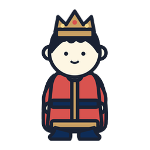
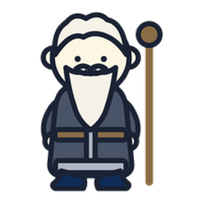
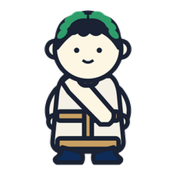
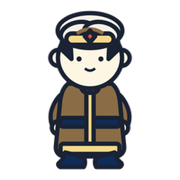
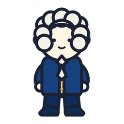
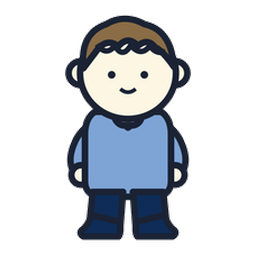
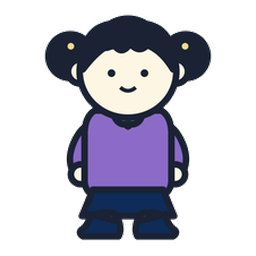
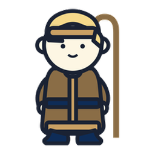
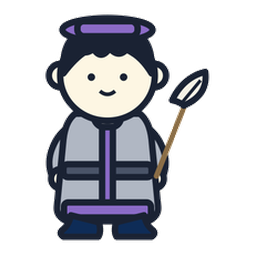

01For Parents · 무엇이 다른가
수는, 마법입니다.
답을 빨리 구하는
계산 학습이 아닙니다
수를 가지고 놀며 사고하는 과정을 배우는, 수를 정복하기 위한 DOCSSAM의 철학입니다. 학교 시험은 틀리기 쉬운 문제로 변별합니다. 대부분의 학원은 유형을 외워 답을 맞히는 법을 가르치죠. Numbers of Magic은 다릅니다 — 어려운 수를 내가 다루기 쉬운 수로 펼쳐서 나에게 맞추어 계산하는 힘을 키웁니다.
유형 암기식
"이렇게 나오면
이렇게 푼다"
이렇게 푼다"
세로셈으로 받아내림하다 실수. 답은 구해도 원리는 모름. 유형이 바뀌면 무너집니다.
Numbers of Magic식
"수를 펼쳐
쉽게 만든다"
쉽게 만든다"
수의 규칙을 이용해 재구성. 실수가 줄고, 수에 대한 창의성과 자신감이 자랍니다.
Philosophy · 핵심 철학
수학은 언어입니다
단어와 문법(공식)을 외우기만 해서는 언어를 자유자재로 구사할 수 없습니다. 숫자라는 언어도 마찬가지예요. 수를 내 마음대로 활용할 수 있어야 진짜 수학입니다. 그래서 우리는 한 문제를 여러 방법으로 풀어봅니다 — 답은 하나지만 길은 여러 개.
Ⅰ
Ⅱ
Ⅲ
Ⅳ
문제
펼치기
계산
받아내림이 사라졌습니다. 1275를 999와 276으로 나누는 순간, 문제는 이미 풀린 것입니다.
02The Ladder · 이어지는 사다리
덧셈에서 미적분Ⅰ까지
초급의 "수를 나누어 더하기"가 훗날 분배법칙 그 자체입니다. 오늘의 작은 원리가 사다리를 타고 올라가 결국 미적분Ⅰ의 언어가 됩니다.
0급
수의 나라 · 9까지의 수수를 알고, 세고, 나누고, 비교하고 — 수와 친해지기
초급
보수로 펼치기
중급
분배법칙 · 곱셈 공식
고급
상관관계 · 등차수열 (경시)
심화
미적분Ⅰ · 극한과 순간의 기울기
03By the Numbers · 숫자로 보는 규모
작은 원리가 거대한 체계로
유아부터 고등까지, 하나의 사다리 위에 촘촘히 놓인 콘텐츠의 규모입니다.
199유닛
180유형
492레벨
04For Kids · 친구들에게
누미와 친구들
 누미
누미 포코
포코 모모
모모
안녕! 난 수의 마법사 누미야.
어려워 보이는 수도, 살짝 펼치면 아주 쉬워져. ? 7에서 2를 빌려와 , 그리고 5! 그래서 15 ✨
어려워 보이는 수도, 살짝 펼치면 아주 쉬워져. ? 7에서 2를 빌려와 , 그리고 5! 그래서 15 ✨
마을에서 포코·모모랑 같이 놀면서 수를 마법처럼 다루는 법을 배울 거야. 정답보다 어떻게 생각했는지가 더 멋진 거란다!
Math History · 역사 속 수학자들
역사 속 수학자들과 함께, 95편의 수학사 만화에서 다시 만나요.

왕
현자
그리스 수학자
학자
근세 수학자
소년
소녀
양치기
필경사상인
천문학자
누미
05Welcome · 입장
DOCSSAM은 연산을 빨리하는 방법이 아닙니다.
숫자의 규칙을 익혀 사고력을 키우는 것.